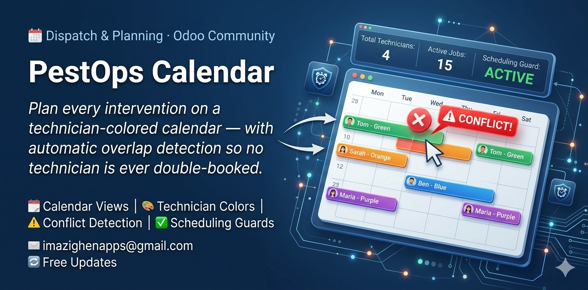
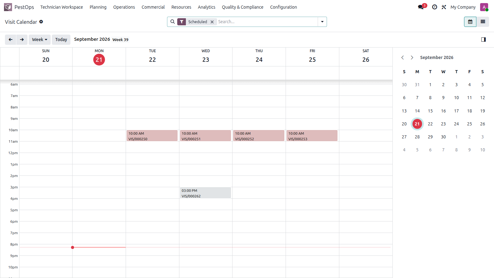
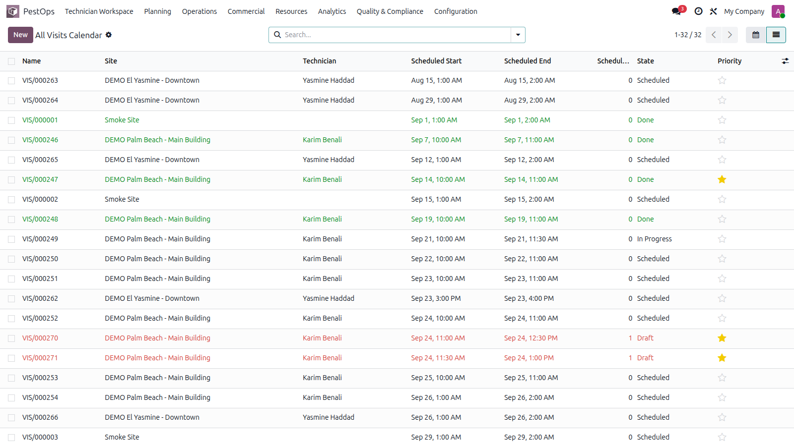

📅 Dispatch & Planning · Odoo Community
🗓️ Calendar Views 🎨 Technician Colors ⚠️ Conflict Detection ✅ Scheduling Guards


Weekly planning colored by technician, with search filters.
Whether you run two technicians or twenty, the calendar shows who is where, when — and refuses impossible schedules before they reach the field.
🧑🔧 Daily Routes 🚨 Emergency Call-Outs 🔁 Recurring Rounds 🏢 Multi-Site Days
A native Odoo calendar over all PestOps visits: day, week and month views, color-coded by technician, with ready-made filters (scheduled, today, this week) and a one-click switch to the full visit list.
Every visit continuously checks for overlaps with the same technician: a counter, a badge, a dedicated conflicts filter — and hard guards. Scheduling or starting an overlapping visit is blocked with a clear message naming the conflicting visits.

All visits with states, technicians and conflict highlighting.
| Odoo Version | Community |
|---|---|
| License | LGPL-3 |
| Module Type | Extension (requires PestOps Core) |
| Dependencies | pestops_core, calendar |
| External Services | None required |
📧 imazighenapps@gmail.com — fast response 🔄 Free Updates